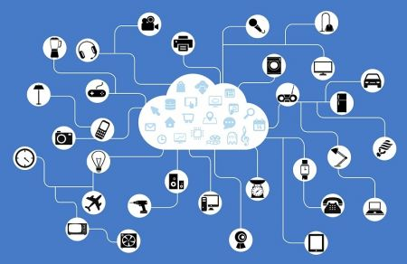

Il 22 ottobre la nostra classe si è recata al Tecnopolo di Reggio Emilia per partecipare alla sesta giornata riguardante alternanza scuola-lavoro, la quale aveva un tema preciso: Linux.
Il Il Linux Day è una manifestazione italiana che ha lo scopo di promuovere il sistema operativo GNU/LINUX e il software libero,
e consiste in un insieme di eventi contemporanei organizzati in diverse città italiane.

Le attività a cui ho partecipato sono state 2:
Software libero:
In questo “corso” ci è stata spiegata l’importanza del software libero che sta prendendo sempre più piede.
Ci sono stati elencati i 10 principi dell’open source e, soprattutto, ci sono stati spiegate le differenza tra software-cs e software libero.
Uno dei problemi del software-cs è che non rispetta la libertà dei propri utenti e in più potrebbe contenere malware. I malware sono i software-cs maligni.
Industria 4.0:
Questo “corso” ha ripreso gli argomenti trattati nei giorni precedenti di alternanza.
E’ stata confermata l’idea dell’importanza dell’open source(codice aperto consultabile e modificabile).
L’era di industria 4.0 è iniziata nel mondo nel 2011 in Germania, questa nuova industria si caratterizza dalle altre perchè tutto è più piccolo e potente.